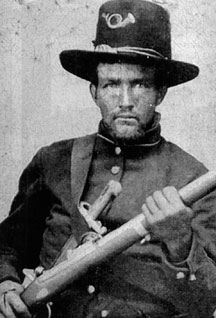

|

NAME: Joseph Houshour
BORN: 1823 (?)
DIED: 1863
ALLEGIANCE: Union
HIGHEST RANK: Private
UNIT: 93rd Indiana Infantry, Company F
RECORD: Enlisted on August 22, 1862. Died
February 17, 1863.
|
|
"I do not believe I have ever seen greater misery from
sickness than now exists in our Army of the Potomac," Union
Inspector General Thomas F. Perly wrote in January 1863.
Sickness and disease, as countless soldiers on both sides
could attest, were among the greatest horrors of the Civil
War. Dysentery, typhoid, and diarrhea were impervious to
shot and shell; their victims were helpless against them.
Private Joseph Houshour learned this awful lesson firsthand.
A native of Virginia, Houshour had moved to Indiana with his
wife and three children shortly before the war. Nearly 40,
he was old enough to understand the harsh reality of war and
the sacrifice it might require. Despite the risks, Houshour
volunteered for Federal service on August 22, 1862. He was
mustered into Company F of the 93rd Indiana Infantry a month
later, and he donned his fresh blue uniform and Hardee hat
and sat proudly for a photographer.
Attached to the Department of the Tennessee, the 93rd
Indiana set out for Memphis on November 9, 1862. Two weeks
later the excited Federals took the field for the first
time, For Houshour, however, there would be no glory, no
memories of hard fighting and camaraderie to carry home when
the war was won. Houshour's brief military career would
revolve around army ambulances, cramped hospital beds, and
physical torment.
While his comrades began their first military campaign,
Houshour was sent to Camp Thomas, Tennessee, suffering from
chronic diarrhea. He was then quickly transferred to the
hospital at Fort Pickering for medical treatment. Despite
the best efforts of army doctors, Houshour's condition
worsened throughout the winter. By mid-February 1863 this
once-vigorous Virginian had wasted away from dehydration.
Doctors finally decided to move the suffering soldier to
Jackson Hospital in Memphis. On February 17, as the army
ambulance in which he lay bounced along a Tennessee road,
Houshour died.
In six months as a Union soldier, Houshour never saw a Civil
War battlefield. Illness would prove to be his regiment's
worst enemy. In two and a half years of service, the 93rd
Indiana lost one officer and 37 enlisted men to combat
wounds, and three officers and 2SO soldiers to sickness and
disease.
Source: Civil War Times Illustrated
39:2 (May 2000), 88.
|